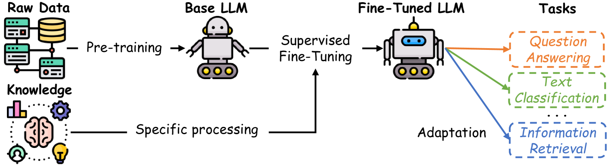
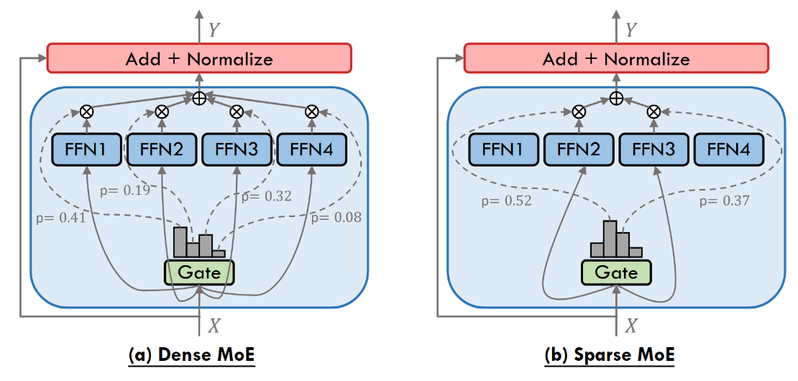
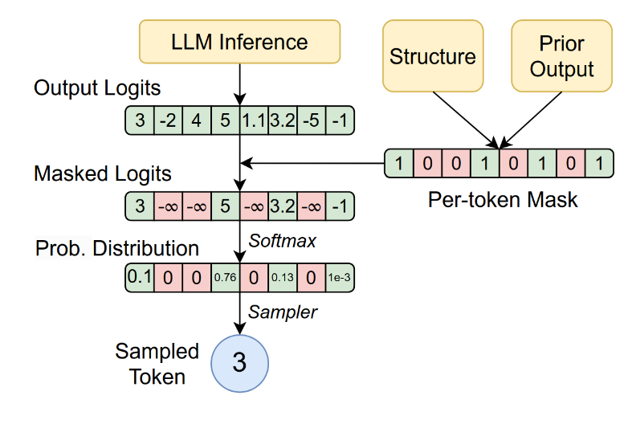
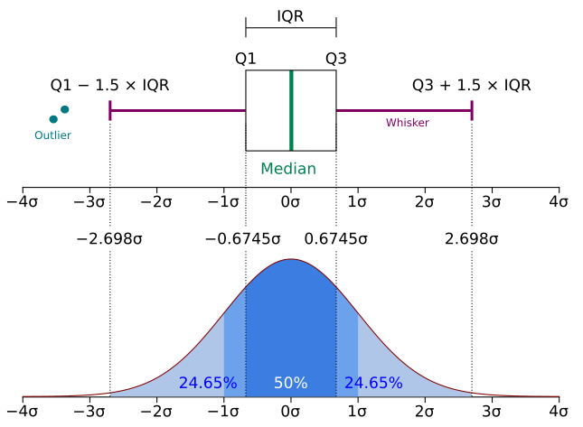
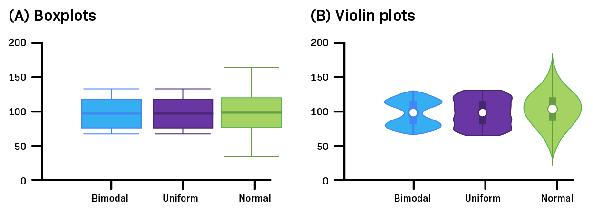
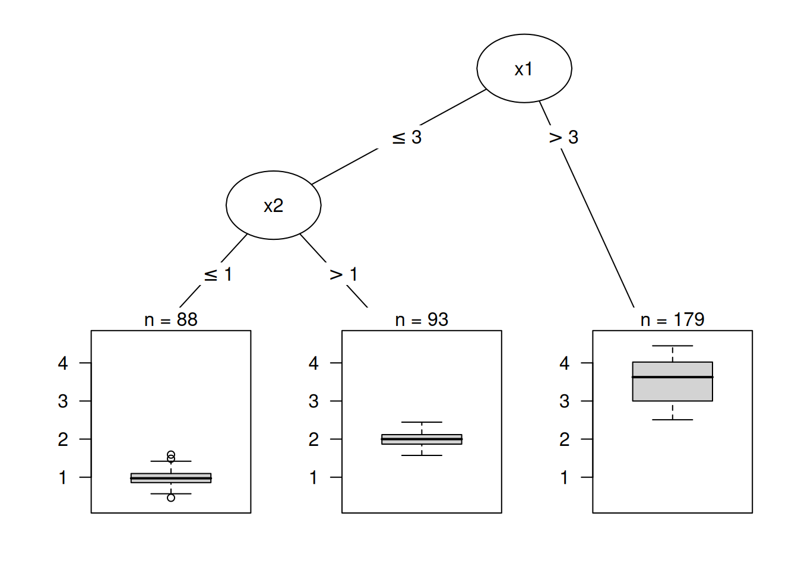
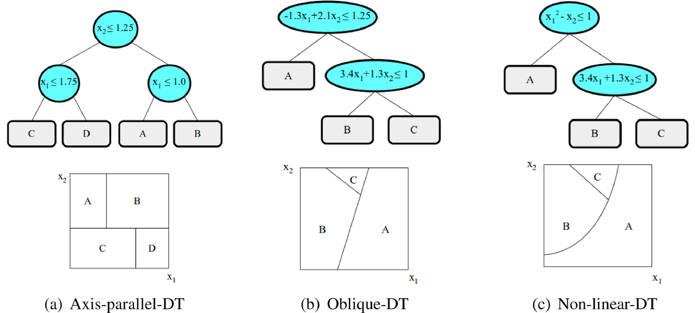

2 Literature Review
This chapter presents literature relevant to our research questions and provides essential background on the concepts and methods employed in this thesis. As outlined in Chapter 1, the problem addressed here lies within the field of information retrieval and is approached using NLP (natural language processing) techniques. Accordingly, Section 2.1 reviews techniques for locating information within and extracting it from documents.
Section 2.2 then explains the mechanisms and architectures of modern LLM (large language model)s, with particular attention to the MoE (mixture of experts) architecture. It also discusses the prompting strategy in-context learning, which leverages the “programming by example” paradigm and explores how RAG (retrieval augmanted generation) integrates into this framework. We also demonstrate how guided decoding can be used to generate structured responses suitable for downstream tasks.
Section 2.3 introduces the SHAP (SHapley Additive exPlanations) framework, a unified model for explaining machine learning predictions, applicable to complex models such as deep neural networks and RF (random forest)s. The latter are briefly described as well. We employ randoRF SHAP to test our hypotheses regarding potential predictors for the information extraction task. Our hypotheses are stated in Section 3.2.1.
2.1 Computer Science
Information retrieval and NLP are pivotal areas within computer science, enabling the efficient extraction and utilization of information from large datasets (Raj & Mishra, 2025). Both topics are described in the following subsections.
2.1.1 Information Retrieval
Information retrieval focuses on identifying relevant information within extensive collections of unstructured text. It is fundamental to applications such as search engines, dialogue systems, question answering and recommender systems (Zhu et al., 2024).
One of the earliest measures used in retrieval algorithms is term frequency (\(\mathrm{tf}_{t,d}\)), which simply counts the number of occurrences of a term within a document. Here, “document” is an abstraction and may refer to a sentence, page or file. Since longer documents tend to have higher term frequencies for each term, it is useful to normalize this value by the document length \(|d|\), resulting in the term rate:
\[\begin{equation} \mathrm{tr}_t = \frac{\mathrm{tf}_{t,d}}{|d|} \tag{2.1} \end{equation}\]
This metric is integral to established measures such as TF-IDF (Frequency-Inverse Document Frequency) and Okapi BM25 (best matching 25), both of which are widely used for ranking document relevance in response to search queries (S. Robertson, 2004; S. Robertson & Zaragoza, 2009). These methods are also commonly employed in RAG architectures (see Section 2.2.6.2). Notably, BM25 is recognized as one of the most successful algorithms for web and corporate search (S. Robertson & Zaragoza, 2009).
The IDF (Inverse Document Frequency) is often used as a weighting function. If the ranking of search results is based solely on the sum of term frequencies present in both the document and the query, less informative terms receive equal weight. For example, in the query “Is the positron blue?”, common terms such as is, the and blue may appear frequently in a document, potentially resulting in a high score even if positron is absent. To address this, term frequencies are multiplied by the IDF score (Manning et al., 2008, p. 118):
\[\begin{equation} \mathrm{idf}_t = \log \frac{N}{\mathrm{df}_t} \tag{2.2} \end{equation}\]
where \(N\) is the total number of documents in the collection and \(\mathrm{df}_t\) is the number of documents containing term \(t\). While term frequencies are calculated separately for each document, the IDF score is computed once for the entire collection. The TF-IDF score is then defined as:
\[\begin{equation} \mathrm{tf\text{-}idf}_t = \mathrm{idf}_t \cdot \mathrm{tf}_{t,d} \tag{2.3} \end{equation}\]
The more advanced measure BM25 is derived in Manning et al. (2008). It introduce a saturation term, that prevents a term occurring very often in a document will increasing the score linearly. The 25 in BM25 simply refers to the fact, that it is the 25th version of the Okapi system, that was developed at City University London (S. E. Robertson & Walker, 1994; S. Robertson & Zaragoza, 2009).
The more advanced BM25 measure, as derived in Manning et al. (2008), introduces a saturation term to prevent the score from increasing linearly with frequent term occurrences. The “25” in BM25 refers to its version within the Okapi system, developed at City University London (S. E. Robertson & Walker, 1994; S. Robertson & Zaragoza, 2009).
Measures such as TF-IDF and BM25 are also applied to classification tasks, including sentiment analysis (Carvalho & Guedes, 2020) and semantic understanding (Rathi & Mustafi, 2023). In the context of RAG, these are referred to as sparse retrievers.
2.1.2 Natural Language Processing
NLP (natural language processing) is a branch of artificial intelligence dedicated to enabling computers to understand, interpret and generate human language (Mahmudi, 22 Dec 2024 6:46pm). NLP encompasses a broad spectrum of tasks, including sentiment analysis, information extraction, table and dialog understanding, summarization, code generation and machine translation (Qin et al., 2025).
Recent advances in NLP have introduced vector embedding-based techniques, known as dense retrievers, which further enhance information retrieval capabilities (Zhu et al., 2024).
Within the scope of this thesis, information retrieval methods are employed to locate financial information in annual reports, while information extraction techniques are used to generate responses formatted for downstream tasks.
2.1.3 Text Extraction
Many information extraction tasks focus on data found in natural texts or tables. To apply NLP techniques, it is first necessary to extract these texts. Adhikari & Agarwal (2024) demonstrate in a benchmark study that rule-based systems such as pypdfium and PyMuPDF perform well, but the transformer-based vision and document understanding tool Nougat (Blecher et al., 2023) achieves even better results.
Adhikari & Agarwal (2024) also benchmark various table extraction tools, finding that the transformer-based Table Transformer (Smock et al., 2022) delivers the most accurate results in most cases, while rule-based tools are more effective for extracting tables from tenders and manuals.
In cases where only a visual representation of text is available, such as scanned pages, OCR (optical character recognition) techniques are required to convert visual information back into text. A comparative study of recent OCR solutions is provided by Francis & Sangeetha (2025).
2.1.3.1 Document Layout Analysis
An essential step in extracting information from complex documents is recognizing the document layout (Zhong et al., 2019). Common tasks include determining the correct order of texts, aligning captions to tables and figures and identifying headings, tables and figures. These techniques help isolate the contents of smaller tables containing relevant information from surrounding text, thereby reducing potential distractions. Paul (2025) provides a comprehensive overview of state-of-the-art document layout analysis architectures and compares the performance of different models.
2.2 Large Language Models
This section shows the strengths and capabilities of modern LLM (large language model)s. It describes their architectural foundations and key mechanisms. Additionally, it covers important techniques such as in-context learning and retrieval-augmented generation, which enhance the performance of LLMs on various tasks.
2.2.1 Capabilities
Z. Wang et al. (2024) begin their introductory survey on LLMs by stating: “Language models serve as a cornerstone in [NLP], utilizing mathematical methods to generalize language laws and knowledge for prediction and generation” (Z. Wang et al., 2024). Their work traces the history and development of language models and provides a clear explanation of foundational concepts, supported by mathematical notation.
Modern LLMs are typically built upon the transformer architecture (Raza et al., 2025), described in Section 2.2.2.1. These models represent the culmination of an evolution from statistical language models, such as n-grams, through neural and pre-trained language models (Z. Wang et al., 2024). LLMs demonstrate remarkable flexibility and can be applied to a wide range of tasks and domains (W. X. Zhao et al., 2025).
This versatility is enabled by training on vast and diverse datasets, which provide both the knowledge and the capabilities required for general-purpose task solving (M. Wang et al., 2024; W. X. Zhao et al., 2025). Figure 2.1 illustrates how supervised fine-tuning can be used to enhance the performance of pre-trained LLMs for specific tasks by leveraging task-specific labeled datasets (Tie et al., 2025).

Figure 2.1: Visualization of LLM pre-training on large text corpora and subsequent fine-tuning on specific knowledge or tasks to adapt models for specialized applications. Source: Tie et al. (2025)
Tie et al. (2025) discuss that fine-tuning a model on instruction tasks facilitates the elicitation of learned abilities across a variety of tasks and domains. This process increases the practical applicability of LLMs, enabling them to function as “zero-shot learners” (Wei et al., 2022). In other words, instruction fine-tuned models can solve many tasks without requiring advanced prompting techniques such as chain-of-thought (W. X. Zhao et al., 2025) or in-context learning (Brown et al., 2020). Nevertheless, as shown in Section 2.2.6.1, these techniques remain valuable for enabling models to perform novel tasks.
For readers seeking a deeper understanding of modern LLMs, we recommend the book “Dive into Deep Learning” (A. Zhang et al., 2023). This resource begins with neural language models and guides the reader through key stages of generative AI, including computer vision models. It features executable code examples and exercises designed to foster comprehensive insight.
2.2.2 Architectural Foundations
2.2.2.1 Transformers
The transformer architecture, introduced in 2017 by Vaswani et al. (2023), represents a novel approach that relies exclusively on self-attention mechanisms to capture global dependencies between inputs and outputs. This design enables substantially greater parallelization compared to earlier architectures such as recurrent neural networks and convolutional neural networks, resulting in significantly reduced training times and improved performance.
2.2.2.1.1 Attention
Vaswani et al. (2023) introduced both the scaled dot-product attention and the self-attention mechanism. Self-attention enables each token in a sequence to attend to every other token, allowing the model to capture dependencies irrespective of their position within the sequence. This capability is crucial for understanding context and relationships in natural language.
The primary challenge associated with attention mechanisms is their computational cost, which scales quadratically with input length (Tahir, 2025). This constraint limits the context window size of many LLMs. Techniques such as sliding window attention, popularized by models like Mistral and Gemma 2, have been developed to improve computational efficiency (Raschka, 2025), thereby enabling support for larger context windows in newer models.
2.2.2.1.2 Processing Input
Before a transformer can process input, the text is first tokenized and embedded using a basic embedding layer. These embeddings are then augmented with positional information via sinusoidal positional encoding (Z. Wang et al., 2024). This procedure is employed in all transformer models, including decoder-only architectures.
2.2.2.1.2.1 Encoder
The encoder’s role is to comprehensively analyze the input text by attending to all its components simultaneously, transforming it into a feature-rich embedding space. This is achieved through the use of unmasked attention mechanisms (Vaswani et al., 2023). The encoder produces a set of context-aware embeddings as its output.
2.2.2.1.2.2 Decoder
The decoder generates output tokens sequentially in an autoregressive manner, attending to previously generated tokens through masked self-attention (Z. Wang et al., 2024) and to the encoder’s output via cross-attention (PhD, 2025). This combination enables the production of coherent and contextually relevant sequences. In decoder-only architectures, the model relies solely on masked self-attention to generate text based on the input prompt.
2.2.2.2 Mixture of Experts
This section describes an architectural component first introduced in the early 1990s by Jacobs et al. (1991), which emerged within the field of language models in 2017 (D. Zhang et al., 2025) and has gained increasing popularity in recent years.
Many recent LLMs employ a MoE (mixture of experts) architecture. Notable examples include Llama 4, Qwen3 and GPT-4-1. D. Zhang et al. (2025) and Cai et al. (2025) provide comprehensive overviews of various MoE architectures. While D. Zhang et al. (2025) highlights models released this year and their applications, Cai et al. (2025) offers a more detailed discussion of architectural types. Additionally, Grootendorst (2024) presents a practical guide to MoE with numerous helpful illustrations.
The fundamental concept behind MoE models is to integrate multiple smaller, specialized FFN (feed forward network)s to achieve superior predictive performance. The MoE “paradigm offers a compelling method to significantly expand model capacity while avoiding a corresponding surge in computational demands during training and inference phases” (Cai et al., 2025, p. 21).
Figure 2.2 illustrates two primary architectural variants. In the dense (a) architecture, each token is processed by every FFN and all results are pooled. In contrast, the sparse architecture processes each token using only a subset of FFNs. While dense MoE models often achieve higher prediction accuracy, they also incur significantly greater computational overhead (Cai et al., 2025).
The gate (or router) manages the distribution of tokens to the FFNs. A wide variety of routing algorithms exist, with the primary objective to “ensure expert diversity while minimizing redundant computation” (D. Zhang et al., 2025). Some algorithms focus on load balancing, while others address domain-specific routing and additional goals. Traditional MoE architectures assume homogeneous experts, prioritizing load balancing. Recent developments explore more heterogeneous expert sets and flexible routing strategies, which promise increased efficiency (D. Zhang et al., 2025).

Figure 2.2: Showing schemas of the dense and sparse mixture of experts architecture.
Most Qwen3 models utilize a dense MoE architecture, with only two recent models, released in July 2025, adopting a sparse approach. These models feature two parameter specifications; for instance, Qwen3-235B-A22B indicates a total of 235B parameters, but only 22B are activated per token processed. In this mixture of experts architecture, 8 out of 128 experts participate in processing each token (Qwen Team, 2025).
Llama 4 models employ a shared expert MoE architecture, combining a fixed expert that processes every token with results from a sparse MoE layer (Meta, 2025).
Google’s gemma-3n-E4B also employs selective parameter activation, using the prefix E for effective rather than A for active (Google, n.d.). In gemma-3n, parameters are allocated to handle different input types — text, vision and audio — and are loaded and activated as needed. This enables multimodal functionality. Additionally, the PLE (Per-Layer Embedding) is cached in fast storage (RAM) rather than model memory (VRAM), allowing these models to operate in low-resource environments.
2.2.3 Token Generation
LLMs generate text by predicting the next token based on the input and context provided. This process utilizes a decoding strategy, which determines how the next token is selected from the probability distribution over the vocabulary. A basic approach is greedy decoding, where the token with the highest probability is always chosen. Willard & Louf (2023) present an algorithm for greedy sampling. While this method can result in repetitive and less diverse text, it is useful when the goal is to obtain the most probable answer, such as for classification tasks or for precisely copying numeric values.
Other strategies include beam search, which maintains multiple candidate sequences and selects the best one based on overall probability, as well as sampling methods such as top-k and nucleus (top-p) sampling (Naseh et al., 2023), which introduce randomness to generate more diverse and creative text. Jadhav (2021) presents several sampling strategies and provides formulas for token probabilities with greedy sampling, both with and without a temperature parameter.
2.2.4 Confidence Scores
LLMs can return a log probability score for each token they predict and may also provide the top k candidates for the next token along with their corresponding log probabilities. The sum of individual log probabilities reflects how likely a sequence of tokens is, according to the LLM. This sum can be interpreted as a measure of the model’s confidence in its prediction (Berkov, 2025).
Boseak (2025) investigate the use of log probabilities to score multiple-choice answers. They demonstrate that the sum of log probabilities contains valuable information about model confidence, but its proper use is nuanced. The decision to use either the raw sum or a length-normalized sum of log probabilities can noticeably affect accuracy and they offer no general recommendation. Ma et al. (2025) argue that normalizing probability scores is one reason probability-based methods may fail to identify reliability.
Kang et al. (2025) compare various potential measures for a LLM’s confidence in best-of-N selection tasks. The simplest approach uses the normalized log probabilities of the returned tokens. The negative exponent of this normalized sum is known as perplexity, which is widely used in LLM evaluations, although it has been shown to be insufficient for capturing a model’s ability to understand long context. Nevertheless, Kang et al. (2025) show that perplexity can perform as well as more sophisticated confidence measures for up to 16 choices.
Kauf et al. (2024) investigate whether log probabilities can be used to measure the semantic plausibility of sentences. They compare pairs of similar sentences, where one described a plausible scenario and the other an unlikely one. Their results show that comparing the sum of returned log probabilities for two sentences yields better results for semantic plausibility than prompting the model to make this decision explicitly.
2.2.5 Generative Pretrained Transformers
The term GPT (generative pre-trained transformers) was introduced by Radford et al. (2018) as the first transformer model to combine unsupervised pre-training with subsequent supervised fine-tuning. This general, task-agnostic model outperformed discriminatively trained models that used architectures specifically crafted for each task (Radford et al., 2018). GPT uses only decoder components and is designed to generate new tokens based on the input and patterns learned during training. The original model contained 117 million parameters.
One year later, Radford et al. (2019) demonstrated with GPT-2 that scaling up both the model and training dataset size significantly improves performance. They showed that the language model could learn tasks without explicit supervised fine-tuning. GPT-2 contained 1.5 billion parameters.
GPT-3 was released in 2020 by Brown et al. (2020) and introduced the technique of in-context learning (see Section 2.2.6.1), demonstrating that large decoder-only transformers can generalize to new tasks even without extensive fine-tuning. GPT-3 contains 175 billion parameters.
2.2.6 Generation-Enhancing Methods With LLMs
2.2.6.1 In-context Learning
Few-shot learning is a prompting strategy that enables LLMs to solve a wide range of tasks simply by presenting task-related examples along with their solutions. Brown et al. (2020) refer to the rapid adaptation to the provided task and examples as in-context learning. Their work demonstrates that GPT-3, as a general-purpose transformer, can surpass the performance of fine-tuned state-of-the-art models in certain tasks.
When evaluating the performance gains from in-context learning, the terms zero-shot, one-shot and few-shot learning are commonly used. In zero-shot learning, only the task is stated without any examples. One-shot learning provides a single example, while few-shot learning involves multiple examples.
The classical alternative to in-context learning is model fine-tuning, where a model’s weights are updated via gradient descent using a large corpus of examples (Brown et al., 2020). Through fine-tuning, the resulting model can perform the target task independently, without requiring additional context or descriptive tokens at inference time.
In-context learning reduces the need to create large datasets for fine-tuning a model on specific tasks. This approach offers great flexibility and can be resource-efficient by sparing the computational costs associated with adapting the model to new tasks (Q. Dong et al., 2024). However, fine-tuning may be preferable for tasks that must be solved regularly, since in-context learning requires processing additional tokens each time, which can be energy-intensive and slow down task execution.
Text classification and information extraction are two tasks that can be addressed using few-shot learning (T. Z. Zhao et al., 2021). For GPT-3, the order in which examples are presented is particularly important (T. Z. Zhao et al., 2021).
Although tutorials and blogs sometimes suggest that using more examples leads to better results (Kuka", n.d.), Brown et al. (2020) demonstrate that performance may not improve significantly when more than two examples are provided.
Furthermore, there is the risk of context rot (Kelly Hong & Anton Troynikov, 2025), where performance can decrease noticeably if the context becomes too long. Thus, the number of examples provided is constrained not only by context width but also by the risk of overfitting to patterns present in the examples but absent from the actual task, especially if the examples are too homogeneous.
2.2.6.2 Retireval Augmented Generation
RAG (retrieval augmanted generation) was introduced by Lewis et al. (2021) to enhance LLM capabilities in knowledge-intensive tasks and to provide information on knowledge provenance. RAG can supply domain- or company-specific information and help overcome the knowledge cutoff of the pre-training dataset (Gao et al., 2024). It can also reduce the likelihood that hallucinated data remains undetected.
Lewis et al. (2021) fine-tuned a sequence-to-sequence model with a fixed retriever component, training only the query encoder and generator. Recent RAG systems often use a retriever component alongside a general-purpose LLM (Gao et al., 2024). Gao et al. (2024) describes several RAG architectures, including naive, advanced and modular systems.
RAG combines information retrieval techniques to identify information relevant to a query and incorporates this information into the prompt. This approach is similar to an automated form of in-context learning that often focuses on providing information rather than demonstrating new patterns. Both dense and sparse retrieval techniques can be used, as discussed in Section 2.1.1 and Section 2.1.2. Gupta et al. (2024) provide an overview of potential retriever mechanisms.
Sources for information retrieval can include a local (vector) database, a knowledge graph or the internet. Recently, Anthropic (2024) introduced the MCP (model context protocol), which, unlike RAG, provides real-time information from structured sources. The MCP can also be used to execute operations beyond information retrieval (Hou et al., 2025), such as using external tools or sending e-mails via the appropriate API (application programming interface).
2.2.6.3 Guided and restricted decoding
Guided decoding is a prompting technique in which a LLM is instructed to respond in a specific format, such as a json (JavaScript Object Notation)-formatted string. It is often combined with in-context learning to increase the likelihood of obtaining the requested format. Examples of pre-structured templates can also be provided. For json, one can request specific keys and properties for the corresponding values.
Restricted decoding, on the other hand, involves manipulating the decoding process itself. This can be achieved by biasing the score values used to determine the probabilities of tokens in an LLM’s vocabulary (Willard & Louf, 2023). Figure 2.3 illustrates how this bias sets the probabilities of certain tokens to zero. This procedure is also called masking, as the tokens become invisible to the token sampler.

Figure 2.3: Visualization of how the masking of tokens reduces their probability to zero, rendering these tokens invisible for the token sampler. Source: Y. Dong et al. (2025)
Masking tokens is often achieved by iterating over the entire vocabulary for each token generation, which has a computational complexity of \(\mathcal{O}(N)\). However, this can be done more efficiently using a finite state machine approach. By employing an index, the complexity can be reduced in average to \(\mathcal{O}(1)\).
Willard & Louf (2023) implemented their approach in the library outlines. The LLM framework vLLM (Virtual Large Language Model) supports only two libraries: guidance (Guidance-Ai/Guidance, 2022/2025) and xgrammar (Y. Dong et al., 2025). For xgrammar, an efficient pushdown automata approach is implemented for token sampling according to context-free grammars.
Docherty (2025) demonstrates how token masking influences the probabilities for subsequent tokens, providing clear examples, helpful visualizations and corresponding code snippets.
2.3 General machine learning and statistics
2.3.1 Sample distribution visualization methods
2.3.1.1 Boxplots
Wickham & Stryjewski (2011) describe boxplots as “a compact distributional summary, displaying less detail than a histogram or kernel density, but also taking up less space. Boxplots use robust summary statistics that are always located at actual data points, are quickly computable (originally by hand) and have no tuning parameters. They are particularly useful for comparing distributions across groups.”
Figure 2.4 displays a box-and-whiskers plot, illustrating its components and comparing it to a Gaussian probability distribution. Half of all observations fall within the box, with the median indicated by a thick line. Outliers are defined as observations outside the area marked by the horizontal lines (whiskers), which may have small bars at their ends. Outliers are often shown as circles or dots.

Figure 2.4: Illustration of a box-and-whiskers plot with its components — median, quartiles, whiskers and outliers — compared to a Gaussian probability distribution. Graphic adapted from Jhguch (2025).
The median and quartiles are less sensitive to outliers than the mean and standard deviation of a sample. Therefore, they are more suitable for distributions that are asymmetric or irregularly shaped, as well as for samples with extreme outliers (Krzywinski & Altman, 2014). Boxplots can be used with as few as five observations. However, even for large samples \((n \geq 50)\), whisker positions can vary considerably.
2.3.1.2 Violin plots
There are variations that attempt to convey the sample size in a box plot, either by adjusting the width of the box or by introducing notches to indicate the confidence interval for the median (Wickham & Stryjewski, 2011).
Violin plots (Hintze & Nelson, 1998) additionally display a density estimate, abandoning the strict rectangular shape of the box. Figure 2.5 demonstrates that these shapes can be essential for identifying multi-modal distributions, which are not visible in standard boxplots (Wickham & Stryjewski, 2011). This issue can also be addressed by adding a jitter plot layer to boxplots. Violin plots are well-suited for large datasets, as they avoid plotting numerous outliers.

Figure 2.5: Comparison of boxplots and violin plots, illustrating that boxplots alone cannot identify multi-modal distributions. Graphic adapted from Amgen Scholars Program (n.d.).
2.3.2 Tree based machine learning algorithms
Random forests are an ensemble supervised machine learning technique composed of multiple decision trees (V. Kulkarni & Sinha, 2013). Mienye & Jere (2024) provide a detailed overview of decision trees and their high-performing ensemble algorithms. Tree-based machine learning algorithms have gained significant popularity due to their simplicity and strong interpretability (Mienye & Jere, 2024).
2.3.2.1 Decision tree
“The basic idea behind decision tree-based algorithms is to recursively partition the data into subsets based on the values of different attributes until a stopping criterion is met” (Mienye & Jere, 2024). Figure 2.6 illustrates this process for artificial data with two continuous features. Common criteria for splitting a set of observations include the Gini index and information gain (Mienye & Jere, 2024).
The tree depicted is used for a regression task and predicts the average of all values in the corresponding terminal node (leaf). To determine the target leaf for a given set of features, one simply follows the path from the top node (root) downward, checking the splitting criteria at each step. As a result, the decisions made by a decision tree are straightforward to interpret and highly transparent.

Figure 2.6: Visualization of the partitioning of a two-dimensional continuous feature space based on multiple splitting criteria for decision tree induction. Graphic adapted from Molnar (2025).
Additional advantages of decision trees — beyond their interpretability and computational efficiency — include their ability to natively capture interactions between features (Molnar, 2025), without requiring explicit modeling as in linear regression. Decision trees can be used for both classification and regression tasks. They can even incorporate linear functions as leafs, enabling them to better capture linear relationships (Raymaekers et al., 2024).
However, decision trees lack resilience to data changes and tend to overfit. Pruning is a common method to mitigate overfitting (Mienye & Jere, 2024). Building an ensemble of decision trees, as in the RF algorithm described in the next section, is another approach to address these limitations.
Problems of decision trees are, that they lack resilience against data changes and have a tendency to overfitting. A method against overfitting is pruning (Mienye & Jere, 2024). Building an ensemble of decision trees is another possibility, that results in the RF algorithm, described in the next paragraph .
Rivera-Lopez et al. (2022) focus on decision trees and describe several types, including distinctions based on the splitting procedure (see Figure 2.7). In addition to axis-parallel splitting, they present oblique and non-linear splitting criteria and provide a state-of-the-art review with a summary analysis of metaheuristics-based approaches for decision tree induction.

Figure 2.7: Visualization of the partitioning of a two-dimensional continuous feature space based on multiple splitting criteria for decision tree induction. Graphic adapted from Rivera-Lopez et al. (2022).
2.3.2.2 Random forest
A RF employs the principle of bagging at the level of both features and observations. It begins by creating basic decision trees using different subsets of features and applies bootstrapping to select randomized sets of observations for training each tree. The final prediction is determined by voting (for classification) or averaging (for regression) the predictions of all trees in the ensemble.
Tree induction can be parallelized, making RFs efficient on modern hardware. They can handle thousands of features and large datasets (Breiman, 2001). Methods exist to address imbalanced datasets. Just as decision trees can be pruned to combat overfitting, randoRF be pruned by removing entire trees to improve learning and classification performance (V. Y. Kulkarni & Sinha, 2012)
Random forests are “powerful learning ensemble[s] given [their] predictive performance, flexibility and ease of use” (Haddouchi & Berrado, 2024). While decision trees are considered white boxes due to their interpretability, RFs are regarded as black boxes. Although decisions can be traced without complex mathematics, the process is tedious, as it requires propagating through many decision trees, recording their predictions and then averaging them.
The classification of RFs as black-box models restricts their deployment in many fields of application (Haddouchi & Berrado, 2024). One feature-oriented tool for explainability is the SHAP framework, presented in Section 2.3.3. It enables local explanation, global overview and pattern discovery for randoRFaddouchiSurveyTaxonomyMethods2024].
2.3.2.3 Gradient boosted decision trees
Another highly effective and widely used advancement of decision trees is the gradient boosted decision tree (Chen & Guestrin, 2016). Instead of bagging, this approach applies the principle of boosting. It sequentially builds decision trees, with each subsequent tree correcting errors made by its predecessors. Gradient descent is used to minimize these errors (Mienye & Jere, 2024).
The XGBoost (Extreme Gradient Boosting) algorithm is a prominent member of this family, with “an outstanding performance record” (Burnwal & Jaiswal, 2023). “Among the 29 challenge-winning solutions published on Kaggle’s blog during 2015, 17 solutions used XGBoost” (Chen & Guestrin, 2016).
Below, we highlight some of its benefits as described by Burnwal & Jaiswal (2023):
XGBoost employs both L1 (Lasso) and L2 (Ridge) regularization in its objective function to penalize model complexity, mitigating overfitting. However, overfitting can still occur, especially if hyperparameters are not properly adjusted.
XGBoost provides feature importance metrics to facilitate model interpretation, aiding feature selection and improving understanding of the model’s decision-making process.
XGBoost “runs more than ten times faster than existing popular solutions on a single machine and scales to billions of examples in distributed or memory-limited settings” (Chen & Guestrin, 2016), leveraging parallelization techniques.
Nevertheless, several challenges remain for future research, such as developing methods to handle imbalanced data and automating the hyperparameter tuning process.
2.3.3 Model agnostic explanation models
2.3.3.1 Shapley values
Shapley values were introduced by Shapley (2016) in 1952 within the field of game theory. He defined three axioms that a fair allocation of rewards must satisfy:
- Symmetry: If two players contribute equally, they are interchangeable and should receive equal rewards.
- Efficiency: The total value of the game is distributed among all players.
- Law of aggregation: If a player contributes to multiple independent games, their total contribution should be the sum of contributions in each game.
From the third axiom, a fourth property is derived, sometimes stated independently: if a player does not contribute to a game, they receive no share. O’Sullivan (2023) refers to this as the null player property.
The formula for a single Shapley value is given by (S. Lundberg & Lee, 2017)2:
\[\begin{equation} \phi_{i} = \sum_{S \subseteq P \setminus \{i\}}{\frac{|S|! \left( |P|-|S|-1 \right) !}{|P|!} \left[ val \left( S \cup \{i\} \right) - val\left(S\right) \right]} \tag{2.4} \end{equation}\]
Molnar (2025) bridges the game theory concepts to machine learning as follows: “The game is the prediction task for a single instance of the dataset. The gain is the actual prediction for this instance minus the average prediction for all instances. The players are the feature values of the instance that collaborate to receive the gain (i.e., predict a certain value).”
2.3.3.2 SHAP framework
In S. Lundberg & Lee (2017), the authors present “A Unified Approach to Interpreting Model Predictions” based on Shapley values, called SHAP (SHapley Additive exPlanations). This framework assigns each feature an importance value for every observation, enabling inspection of why a specific prediction is made and potentially explaining model errors for particular observations. Examining predictions across all observations can reveal generalized effects of features.
S. Lundberg & Lee (2017) demonstrate that their approach is the only possible explanation model for the class of additive feature attribution methods that possesses three desirable characteristics: local accuracy, missingness and consistency. Shapley values can be computed for any machine learning model, but their exact calculation is computationally extremely expensive (Hu & Wang, 2023), with exponential complexity \(\mathcal{O}(2^p)\) in the number of features (or predictors) \(p = |P|\).
Even with the approximation of the shapley values, introduced in S. Lundberg & Lee (2017) as Kernel SHAP, the complexity for tree based algorithms is \(\mathcal{O}(MTL2^p)\), with the number of samples \(M\), number of trees \(T\) and the number of leaves \(L\). The tree based optimization of the algorithm, TreeSHAP, allows an approximation in \(\mathcal{O}(MTLD^2)\) (S. M. Lundberg et al., 2019), with the maximum tree depth \(D\). Depending on the number of observations (\(M\)) to calculate shapley values for, the Fast TreeSHAP algorithm has a even lower time complexity of \(\mathcal{O}(TLD2^D+MTLD)\) (Yang, 2022).
To quantify the overall effect of a feature on the model, we compute the mean of the absolute Shapley values for that feature across all observations. The formula below is adapted from Molnar (2025), with notation and variable names adjusted to match Equation (2.4):
\[\begin{equation} mean\left(|SHAP|\right) = \frac{1}{n} \sum_{k=1}^n | \phi_{i}^{\left( k \right)} | \tag{2.5} \end{equation}\]
This value is called SHAP feature importance. It can be interpreted similarly to standardized beta values in linear regression. In some cases, it is possible to calculate the direction of the effect for feature importance, but this is not common practice. Instead, visual representations are typically used for such interpretations. Guidance on utilizing these visualizations is provided in chapter 18 of “Interpretable Machine Learning” (Molnar, 2025).
S. Lundberg & Lee (2017) also showed that SHAP values are more consistent with human intuition than previous local explainable models. Z. Li et al. (2024) note that explainability of machine learning models is important not only for researchers but also for practitioners, as it helps demonstrate reliability to potential users and build trust. Despite the popularity of SHAP scores, there are claims that they can be inadequate as a measure of feature importance (Huang & Marques-Silva, 2024). Both approximated and exact SHAP scores can sometimes assign higher value to unimportant features than to important ones.
Nevertheless, the need for high explainability in machine learning algorithms is more urgent than ever, as the EU’s regulatory ecosystem increasingly emphasizes the importance of XAI (explainable artificial intelligence) (Nannini et al., 2024).
2.4 Summary
This chapter highlighted recent architectures for LLMs, such as Mixture-of-Experts and provided references for readers to explore foundational concepts and the history of NLP in greater detail. It presented in-context learning and retriever augmentation as advanced prompting strategies, which were benchmarked in our experiments.
The review underscored the importance of explainability in machine learning, particularly through frameworks like SHAP and discussed visualization techniques such as boxplots and violin plots for understanding data distributions.
The methods and concepts discussed directly inform the thesis’s approach to extracting financial information from unstructured documents. By presenting advanced LLM architectures and explainability tools, this chapter establishes a foundation for the experimental strategies and evaluation criteria employed throughout the thesis.
Building on these insights, the following chapter details the methodology adopted for applying and evaluating these techniques in the context of financial report analysis, thereby setting the stage for the experimental investigations and results.